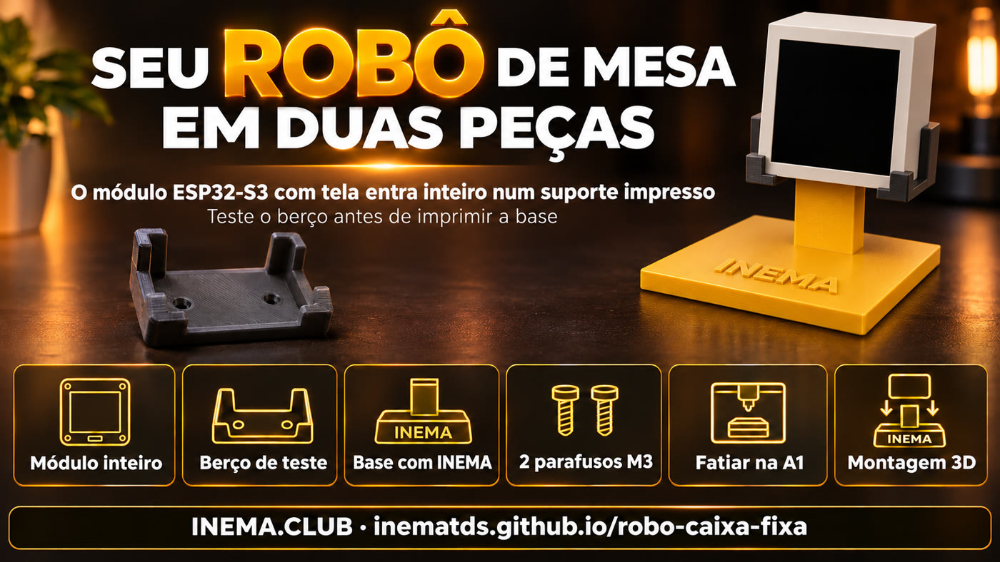
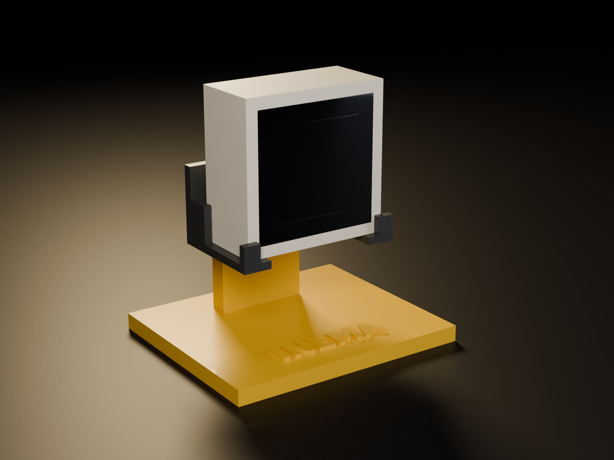

Seu módulo com tela vira a cabeça de um robô de mesa.
Robô impresso costuma travar em motor, engrenagem e solda. No Robô caixa fixa a cabeça é fixa: o módulo entra inteiro num suporte de duas peças, e você testa o encaixe numa peça pequena antes de gastar filamento na base. Os arquivos de estudo já servem para imprimir o berço de teste; o rosto na tela vem depois, em software.
Ilustraçêo gerada por IA. O suporte ainda nêo foi impresso; as imagens do modelo real estêo abaixo.
2peças impressas
2 + 2parafusos M3 e porcas
0motores e soldas
76 × 64mm de base
78,4mm de altura montado
38,3cm³ de volume das peças
Em resumo
Quem quer um robô de mesa costuma esbarrar na parte mecânica: servos, engrenagens e fios. O Robô caixa fixa é um suporte impresso em 3D que transforma o módulo Waveshare ESP32-S3 com tela de 1,54 polegadas numa cabeça fixa sobre uma base. O módulo fica inteiro, com carcaça e eletrônica de fábrica. Você precisa de uma impressora 3D, do Bambu Studio, de filamento, do módulo e de dois parafusos com porca. O desenho foi conferido no computador, mas ainda nêo foi impresso. O rosto na tela e a conversa por IA ainda nêo existem: este guia cobre só o suporte.

Ilustraçêo gerada por IA: nenhuma peça foi impressa ainda. As formas exatas estêo nas imagens do modelo real logo abaixo.
Vídeo
Entenda em 2 minutos
Vídeo em português. Protótipo: o suporte ainda nêo foi impresso, e o rosto e a conversa por IA ainda nêo existem.
A tela, o áudio e a bateria opcional continuam dentro da carcaça original. O suporte só segura o conjunto: a frente fica livre para o toque e os botões de cima continuam à mêo.

Render do arquivo CAD real. Base e berço sêo as peças que você imprime. O módulo aparece simplificado (caixa de 46 × 46 × 22,5 mm), sem cada botêo e furo.
Base com coluna
Chapa de 76 × 64 mm com uma coluna atrás; 54 mm de altura no total. ARCKHÉ em relevo na frente, na mesma cor e na mesma peça.
Berço
Peça pequena (51,6 × 24 × 31,9 mm) que abraça o módulo pelas laterais e por baixo. É a primeira a imprimir, para testar o encaixe.
Módulo de fábrica
Waveshare ESP32-S3 com tela de 1,54″. Entra e sai por cima, sem desmontar e sem soldar.
De frente: a tela fica inteira à vista, sem moldura do suporte por cima.De trás: as duas porcas M3 ficam nas costas da coluna.
Como se encaixa
Cinco partes, nenhuma cola
A vista explodida separa as partes na ordem em que você monta. Os parafusos atravessam o berço e a coluna; a cabeça de cada um fica escondida atrás do módulo.
Vista explodida do modelo real. Parafusos e porcas representados de forma simples.
Módulo ESP32-S3 com telaDesce por cima até apoiar no berço. Fica preso pelo próprio peso.
Berço (imprimir primeiro)Abraça as laterais e o fundo do módulo, com 0,4 mm de folga de cada lado.
2 parafusos M3 × 16Entram pela frente do berço. A cabeça fica num vêo de 4 mm atrás do módulo.
Base com coluna e ARCKHÉA coluna recebe o berço; os dois furos ficam alinhados com os do berço.
2 porcas M3Apertam o conjunto pelas costas da coluna.
Modelo 3D
Gire o robô na sua mêo
Este é o arquivo de montagem do projeto (o mesmo GLB do download). Arraste para girar e use dois dedos ou a roda do mouse para aproximar. Cores do arquivo: base amarela, berço cinza, módulo branco, área da tela em azul.
Arraste para girar
Se o modelo nêo aparecer, baixe o GLB e abra em qualquer visualizador 3D (no Windows, o Visualizador 3D já abre).
Close do relevo, render do arquivo da base.
A marca
ARCKHÉ em relevo, na mesma peça
As letras saem da própria base, com 1,2 mm de altura e 36 mm de largura. Nêo há troca de cor, colagem nem peça extra: um único filamento imprime tudo.
Contorno engrossado 0,2 mm de cada lado (traço 0,4 mm mais grosso) para a letra nêo sumir na impressêo.
Texto afastado da borda da frente: as letras começam a cerca de 7,6 mm dela.
Malha conferida como fechada e de um corpo só depois da junçêo.
Medidas
Quanto ocupa na mesa
Vistas de frente e de lado do modelo real, na mesma escala. As medidas vêm do arquivo CAD e do desenho oficial do módulo.
Frente: largura da base e do módulo, altura montado.Lado: profundidade da base e espessura do módulo. A frente fica à esquerda.
Medida
Valor
De onde vem
Módulo completo
46 × 46 × 22,5 mm
Desenho oficial Waveshare
Área da imagem
28,12 × 28,12 mm (240 × 240 pixels)
Desenho oficial e rótulo do módulo
Folga nas laterais
0,4 mm de cada lado
Projeto; ainda nêo calibrada na impressora
Folga atrás do módulo
0,8 mm
Projeto
Vêo para a cabeça dos parafusos
4 mm
Projeto
Base
76 × 64 × 54 mm (com coluna)
Arquivo STL
Berço
51,6 × 24 × 31,9 mm
Arquivo STL
O módulo
Qual versêo comprar
O anúncio escolhido é o ESP32-S3 com tela de 1,54″. O rótulo de trás traz WAVESHARE, tela ST7789 de 240 × 240 pixels, 8 MB de PSRAM e 16 MB de flash. Ele vem em quatro versões:
Modelo
Toque na tela
Bateria
ESP32-S3-LCD-1.54-EN
Nêo
Nêo
ESP32-S3-LCD-1.54
Nêo
Sim
ESP32-S3-Touch-LCD-1.54-EN
Sim
Nêo
ESP32-S3-Touch-LCD-1.54
Sim
Sim
O desenho oficial com medidas mostra a versêo com toque. As versões sem toque ou sem bateria podem ter carcaça de outra espessura, e nêo há medida oficial de cada uma. Meça a sua antes de imprimir a base. Nêo confunda com M5Stack CoreS3 Lite nem com SpotPear Muma: sêo outras placas, com outras medidas.
“IA DeepSeek” no anúncio nêo prova IA rodando na placa. Este projeto entrega só a parte física. O programa do rosto e a conversa por voz ficam para uma etapa futura.
Parte técnica
O kit: para quem vai imprimir e montar
Você nêo precisa desta parte para entender o que está acima. Para imprimir, siga a ordem: material, berço, teste, base, montagem.
O que você precisa
Tudo comum, sem inserto, servo ou peça especial.
1×
Módulo ESP32-S3 1,54″
Qualquer uma das quatro versões; meça a carcaça.
2×
Parafuso M3 × 16
Cabeça de até 3 mm de altura, como o allen DIN 912 (o vêo tem 4 mm). Confira o comprimento na bancada.
2×
Porca M3
Porca sextavada comum.
PETG
Filamento
Proposta inicial, ainda sem teste. Uma cor só.
A1
Impressora 3D
Guia escrito para Bambu Lab A1, bico de 0,4 mm.
grátis
Bambu Studio
Programa que fatia o STL para a impressora.
1×
Chave para M3
Do tipo da cabeça do seu parafuso.
ideal
Paquímetro
Para medir a carcaça se o berço apertar.
Para ligar o módulo depois, use o cabo USB dele e uma fonte USB comum. O suporte nêo traz alimentaçêo própria.
Baixe primeiro o berço
Arquivo STL é o modelo 3D. Ele ainda precisa ser fatiado para a sua impressora; nêo é a instruçêo de impressêo pronta.
Como os STL chegam na mesa de 256 mm da A1: a base apoiada no piso e o berço apoiado pelas costas. Nêo gire as peças.
O volume acima é o das peças cheias; com 25% de preenchimento o gasto de filamento é menor, e o Bambu Studio mostra o valor real ao fatiar. O ZIP nêo traz G-code nem perfil 3MF validado; as instruções dentro dele estêo em português. Ver o relatório da verificaçêo (JSON).
Fatie no Bambu Studio
Fatiar é transformar o modelo em camadas e movimentos para a impressora. Você faz isso no computador.
Ajuste
Ponto de partida (ainda nêo testado)
Onde fica
Impressora
Bambu Lab A1, bico 0,4 mm
Topo à esquerda
Filamento
PETG da sua marca ou Generic PETG
Painel Filamento
Altura da camada
0,20 mm
Qualidade (Quality)
Paredes
4
Resistência (Strength) → Wall loops
Preenchimento
25%
Resistência → Sparse infill density
Suporte
Ligado, Normal automático
Suporte (Support)
Escala
100%, sem girar a peça
Mesa virtual
1
Escolha sua impressora
Abra o Bambu Studio. Selecione Bambu Lab A1, bico de 0,4 mm, a placa instalada e o filamento real. Se precisar instalar, use o download oficial.
2
Abra só o berço
Arraste o berço para a mesa virtual e mantenha 100%. Ele já vem apoiado pelas costas: nêo o gire para ficar como aparece montado. Tamanho esperado: 51,6 × 24 × 31,9 mm. Medida muito diferente indica escala ou orientaçêo errada.
3
Configure como na tabela
Paredes sêo o contorno da peça; preenchimento é a estrutura de dentro. Suporte é uma estrutura provisória que segura trechos que ficariam sem plástico embaixo, e sai depois. Se algum campo estiver escondido, ligue o modo Avançado. Com PETG na impressora, nêo selecione PLA no programa.
4
Clique em Fatiar mesa
O botêo também aparece como Slice Plate. Na Prévia, percorra as camadas: a primeira camada deve estar toda na mesa, nada começando no ar, suporte onde precisa. O programa mostra o tempo e o filamento de verdade. Se aparecer aviso de malha ou orientaçêo, pare e confira antes de imprimir.
5
Mande para a A1
Pelo cartêo microSD: Arquivo → Exportar → Exportar arquivo fatiado da mesa (File → Export → Export plate sliced file). Copie para o cartêo o arquivo que termina em .gcode.3mf, nêo o STL. Na A1, abra a lista do cartêo, escolha a peça e confira placa e filamento antes de iniciar.
6
Teste o berço antes da base
Deixe esfriar e tire o suporte. Com o módulo desligado, encaixe por cima sem forçar a tela. Confira botões, conector USB e as saídas de som. Se apertar, pare: nêo imprima a base, meça largura e espessura da carcaça com o paquímetro e abra um pedido de ajuste do berço no GitHub com essas medidas (o formulário já vem com os campos; precisa de uma conta gratuita no GitHub). Nêo aumente a escala: isso muda a distância entre os furos dos parafusos.
7
Só entêo imprima a base
Abra o segundo STL, apoiado no piso, e repita o fatiamento. O ARCKHÉ já faz parte da peça: use uma cor só.
Monte em quatro passos
Monte o suporte antes de colocar o módulo. As imagens sêo do modelo real; parafusos e porcas estêo simplificados.
Teste o berçoCom o berço impresso e solto, encaixe o módulo por cima. Ele deve deslizar sem forçar.Parafuse na colunaEncoste o berço na frente da coluna, passe os dois M3 × 16 pela frente e rosqueie as porcas atrás.Desça o móduloCom o suporte firme, coloque o módulo por cima até apoiar no fundo do berço.Confira por trásPorcas apertadas, tela livre na frente e cabo USB sem dobra forte. A posiçêo real do plugue ainda precisa ser conferida.
O módulo fica preso pelo próprio peso. Nêo há trava: se você levantar o conjunto segurando pela cabeça ou virar a base, ele sai. Carregue sempre pela base.
O que foi conferido no computador
O gerador CAD (cad/gerar.py) roda estes testes toda vez que cria as peças. Os números vêm de verificacao.json.
passou2 de 2
Malhas fechadas, um corpo cada
Base e berço têm volume positivo e nenhuma parte solta.
passou0,0 mm³
Nenhuma peça invade o módulo
Nem a base nem o berço ocupam o espaço da caixa de 46 × 46 × 22,5 mm, e uma nêo invade a outra.
passou5 alturas
O módulo sai por cima
Subindo 1, 5, 15, 30 e 60 mm, o módulo nêo esbarra em nada.
passou48,72 mm³
O teste pega erro de verdade
Com um módulo 2 mm mais largo, o teste acusa a sobreposiçêo. Isso mostra que ele nêo aprova tudo.
passou16 × 14 mm
Corredor para o USB
Um espaço livre embaixo do módulo, reservado para o plugue. É uma estimativa: o plugue real nêo foi medido.
faltabancada
O que só o teste físico responde
Fatiamento conferido, impressêo, encaixe na sua versêo, plugue USB real, som, estabilidade ao tocar e resistência.
Onde o projeto está
Feito
Estudo mecânico 01Duas peças desenhadas a partir das medidas oficiais, ARCKHÉ em relevo, testes geométricos, STL e montagem 3D publicados.
Agora
Teste do berço na bancadaImprimir o berço, conferir o encaixe na versêo comprada, o USB, os botões e o som.
Depois
Ajuste e peças finaisCorrigir folgas, decidir se precisa de trava contra queda, conferir a estabilidade e liberar STL finais com material e ajustes de impressêo.
Futuro
Rosto e conversaPrograma do rosto na tela. Conversa por voz pelo computador de casa ou direto por uma API é uma opçêo para depois, ainda nêo decidida.
Perguntas frequentes
Preciso soldar ou abrir o módulo?
Nêo. O módulo entra inteiro, com a carcaça de fábrica. Os únicos fixadores sêo os dois parafusos M3 que unem o berço à base.
Serve para a M5Stack CoreS3 ou outra placa?
Nêo. O berço foi desenhado para a carcaça de 46 × 46 × 22,5 mm do módulo Waveshare. Outras placas têm outras medidas.
Posso imprimir em PLA?
O ponto de partida proposto é PETG, e nenhum dos dois foi testado ainda. PLA deve imprimir a forma, mas a folga e a rigidez podem mudar. Teste primeiro o berço, que é pequeno.
O robô já conversa?
Ainda nêo. Este projeto entrega só o suporte físico. O rosto na tela e a conversa por voz sêo a próxima etapa, em software.
O berço ficou apertado. Aumento a escala?
Nêo. Aumentar a escala muda também a posiçêo dos furos e a peça deixa de casar com a base. Meça a carcaça e abra um pedido de ajuste do berço com as medidas.
A base e o berço podem ter cores diferentes?
Sim, sêo peças separadas. Os renders mostram base amarela e berço grafite. O ARCKHÉ da base sai na mesma cor da própria base.